Halation that knows where the light is.
Halo Pro is a halation emulator for the Mac. It puts film’s red-orange glow beside the brightest light in your photograph, where film would put it.
macOS 14 or later on Apple Silicon. Free for personal work, with every control.
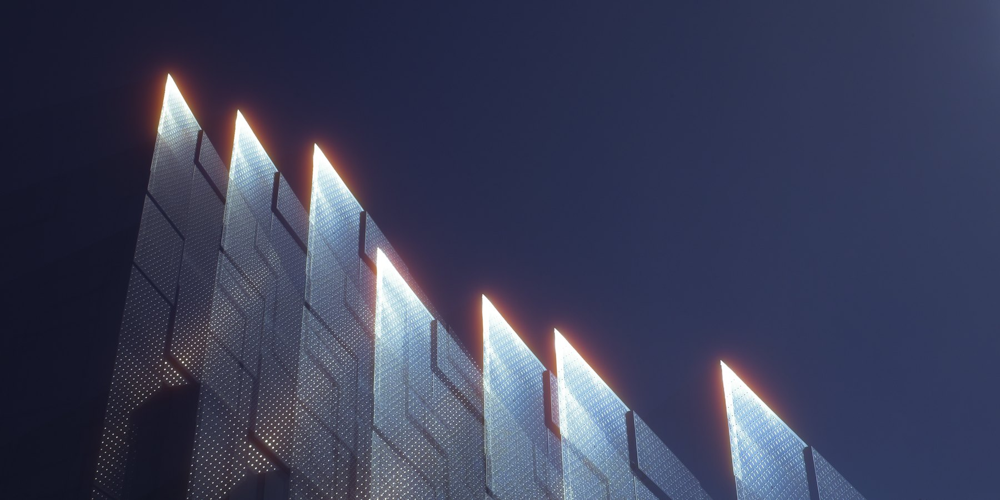
Set the glow in one window.
Open a TIFF, PNG or JPEG, set how much light comes back and how far it spreads, and export.
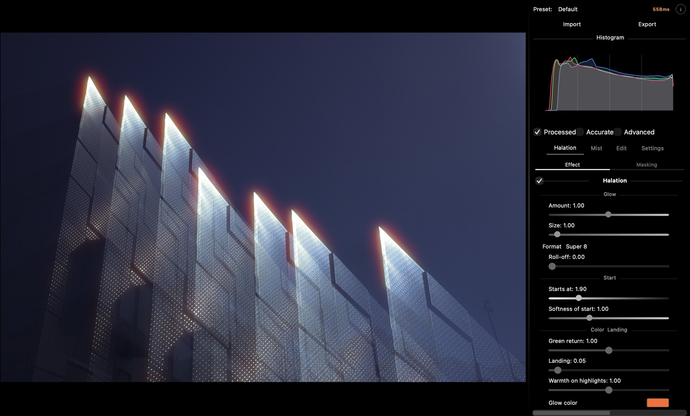
Halo Pro 2.3 with the same photograph open: the Default look, Format Super 8.
Made with Halo Pro.
Photographs exported from Halo Pro.
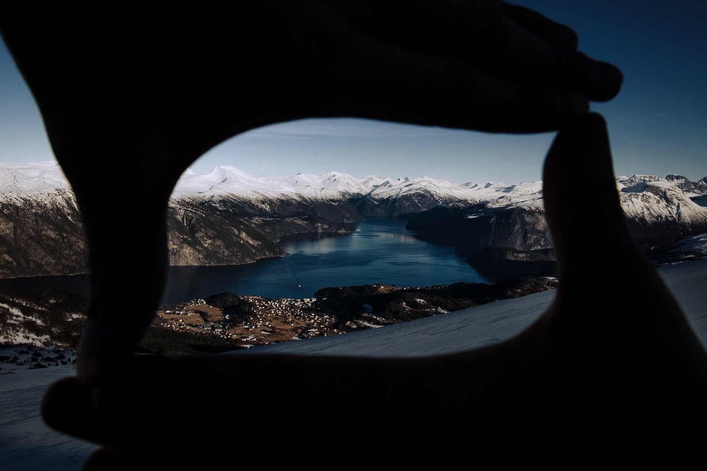
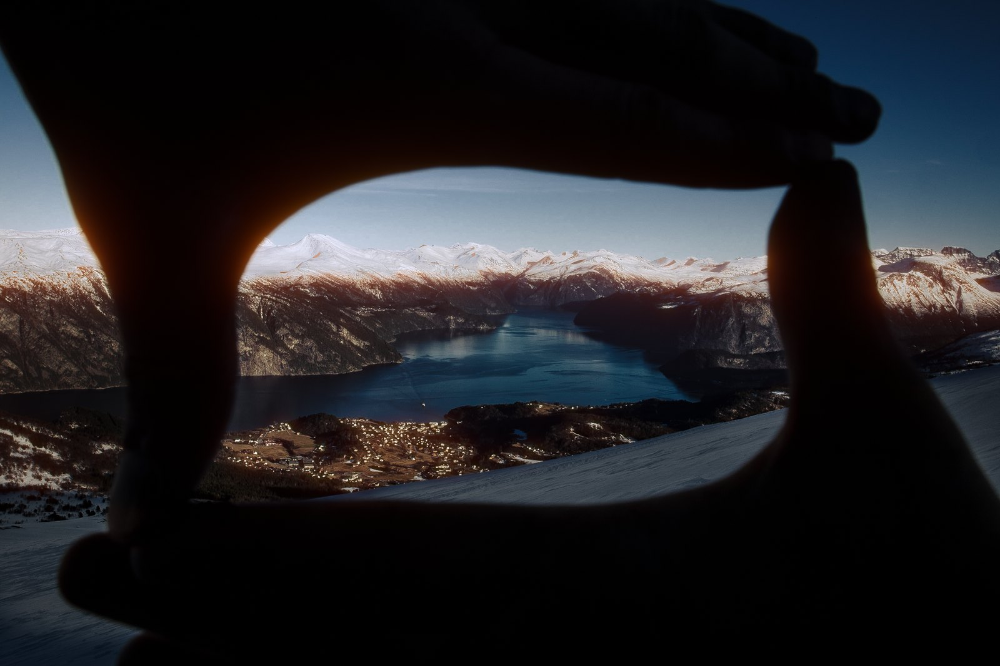
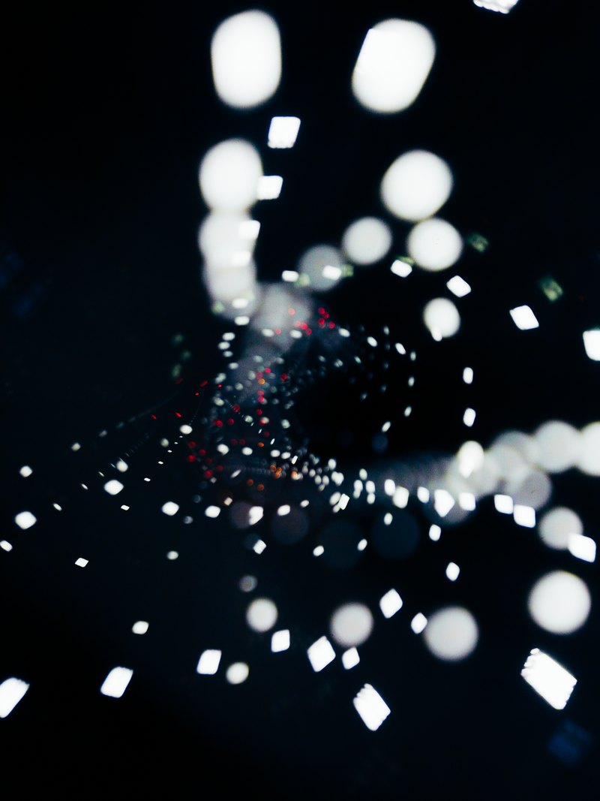
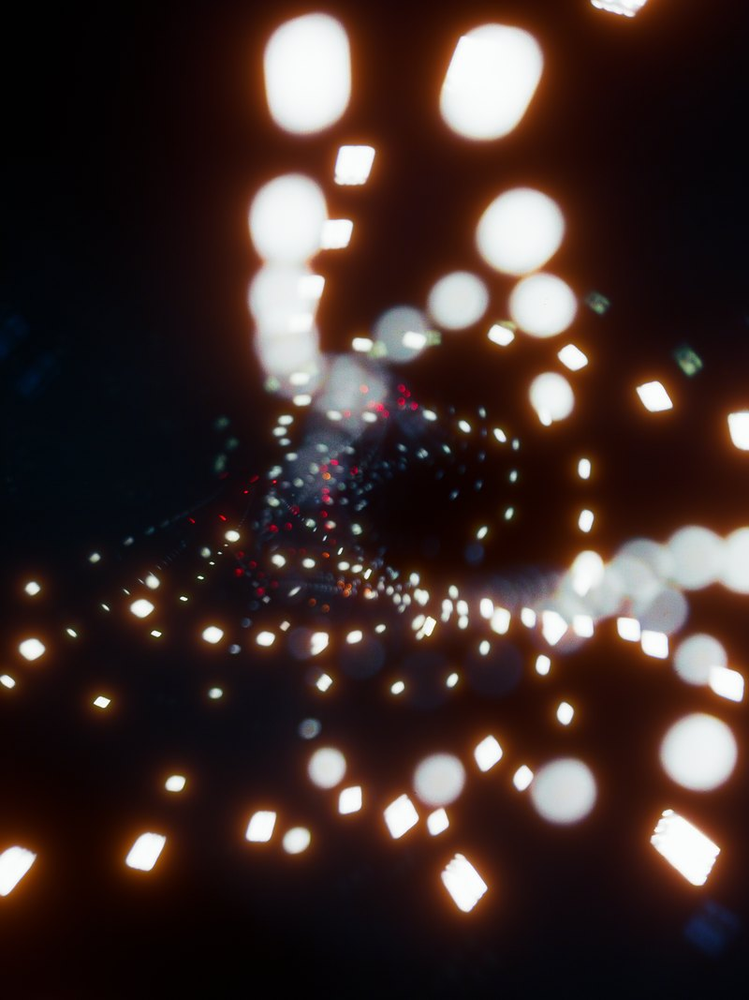
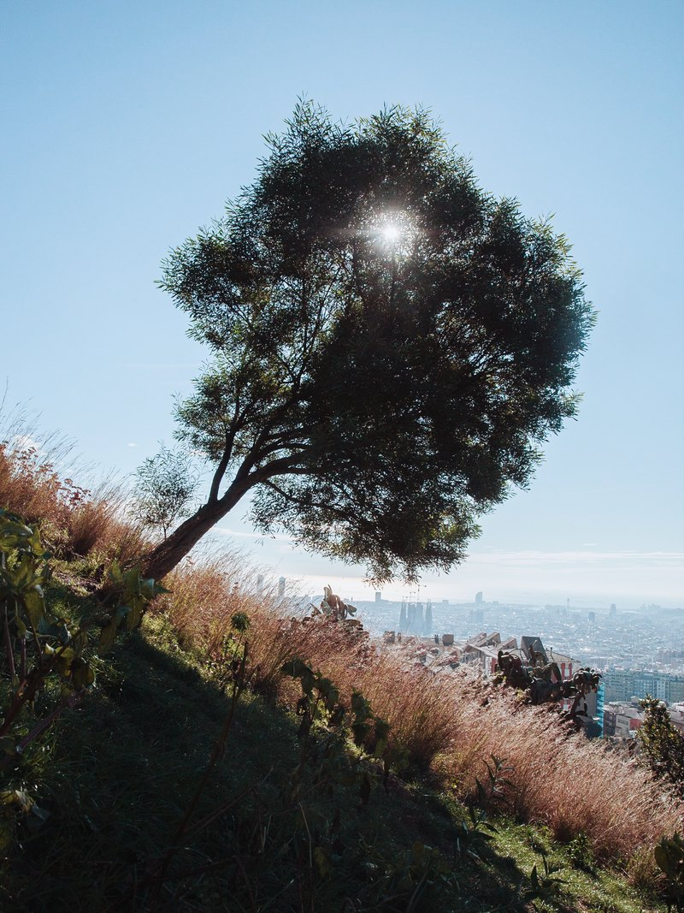
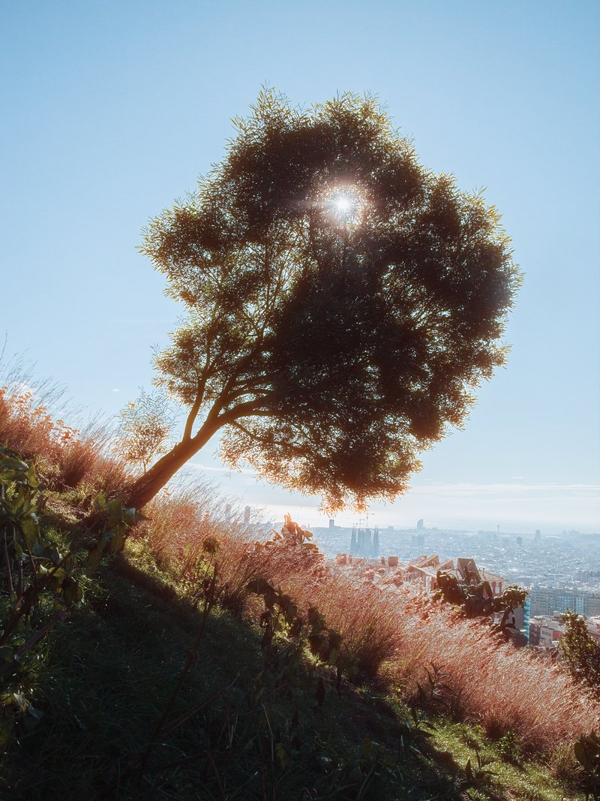
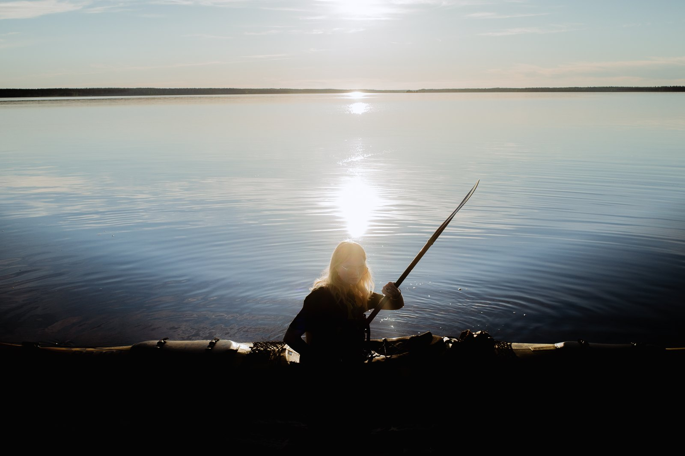
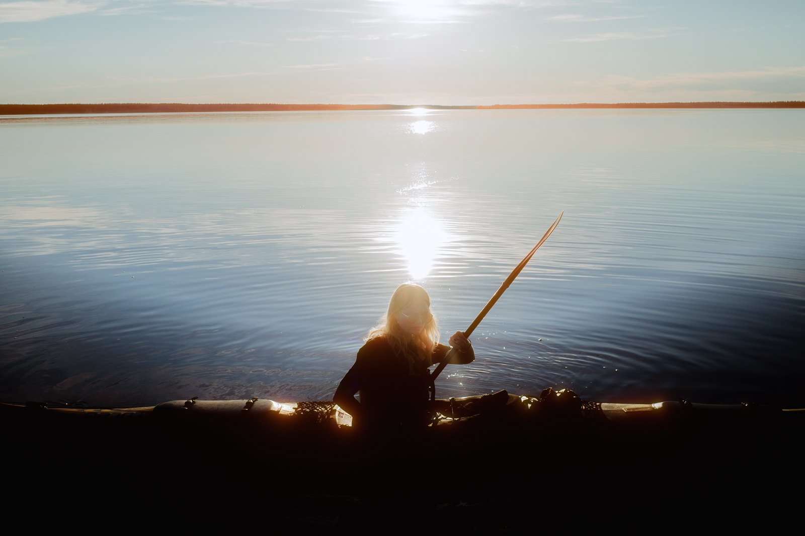
All four: halation only, Format 16 mm, Amount 1, Roll-off 0.5, Mist off, Warmth on highlights 0.
Bright areas keep their colour.
The usual shortcut blurs everything bright and tints it red, so a pale sky turns pink and a grey wall goes warm. Halo Pro works out where film would send light back: the glow lands beside the lights and not on the bright surface itself.
As opened
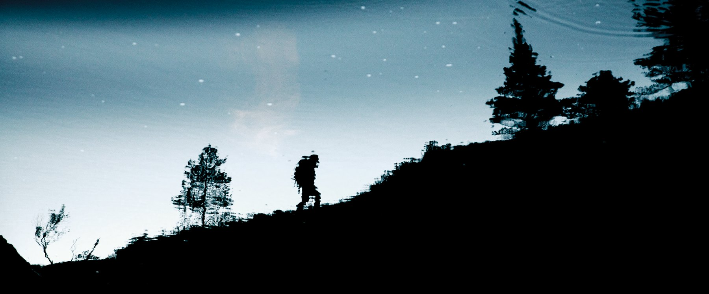
Red blur
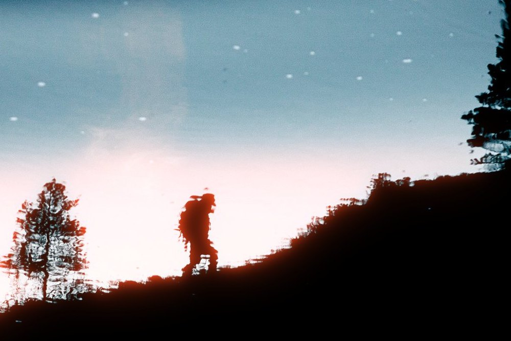
Halo Pro
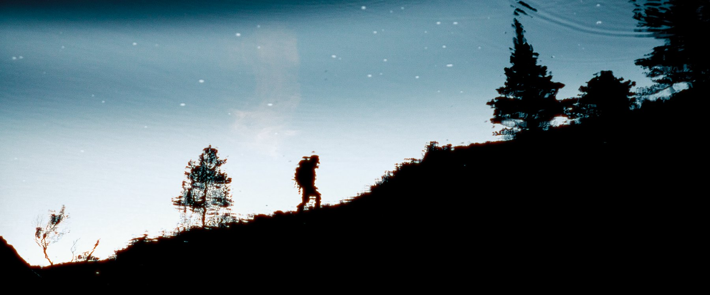

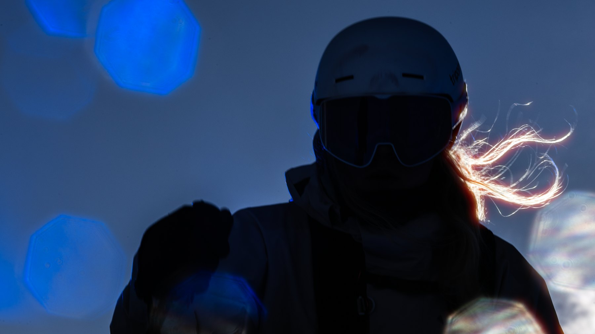
Beside Lightroom’s Halation.
One test file through Lightroom’s Halation at its smallest Spread, and through Halo Pro with a glow a little wider. In Lightroom the light grey turns pink and the cyan almost white, and the red end gets no glow. Halo Pro keeps the bars’ colours and glows red and orange where film would.
Test file
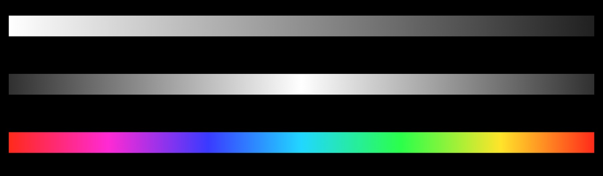
Lightroom 10.0
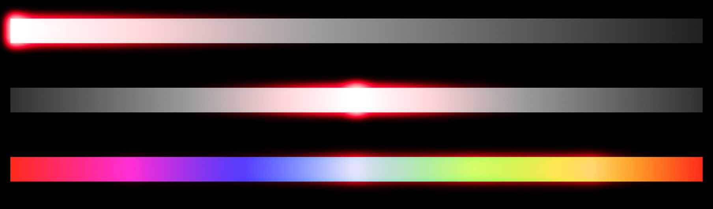
Halo Pro 2.3
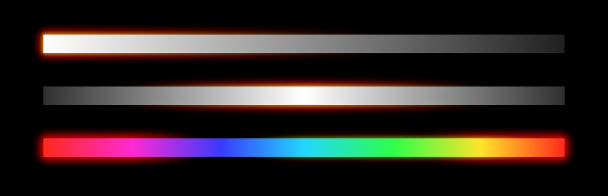
An 8-bit test file 2,048 pixels wide. Lightroom 10.0, Halation, Spread 0, as exported. Halo Pro 2.3, Format Super 8, Amount 1, Warmth on highlights 0, Mist off. Their glows reach 24 and 30 pixels past the white bar.
Mist, chosen after the shoot.
A mist filter on the lens scatters highlight light into the shadows. Here it is a stage after the halation, and its strength stays open until you export.
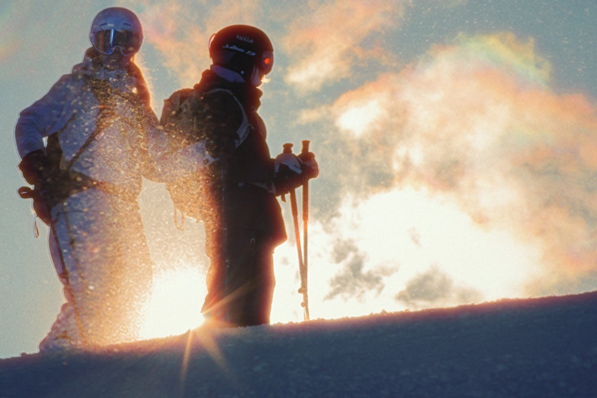
Fits anywhere a TIFF does.
Use it at the end of the edit or in the middle of a grade. Open a 16-bit or 32-bit float TIFF and export at 16 bits or as 32-bit float.
- Raw developeror the retouch
- TIFF16-bit or 32-bit float
- Halo Prohalation, mist
- TIFFsame profile
- Grade, grainand delivery
Round trip
From Lightroom Classic, Edit In hands over a TIFF and Save and return writes a 16-bit TIFF back.
Before grain
Run it before grain, so the grain sits on top of the glow.
32-bit float
A 32-bit float TIFF holds light above white, and there a sun glows more than a white shirt. A 32-bit float export keeps that light, unless a LUT after the mist, or Bloom, clips it.
Volume
Batch Mode takes up to 500 files, each with its own settings; Apply to All copies one look across the set.
No raw files: send a TIFF. One .cube LUT sits before the halation or after the mist. The round trip and Batch Mode need Pro.
Free for personal work, €20 for paid.
Bought once, no subscription.
Free
€0
Personal use. Every control and mask view, LUTs and presets, full-resolution export up to 32-bit float. A licence screen at each launch.
DownloadHalo Pro
€20 once
Paid work, for one person. Adds Lightroom Mode (Edit In, Save and return) and Batch Mode.
Buy Halo ProOrganisation
€60 once
Studios and companies, for several people. Everything in Halo Pro.
Buy for an organisationmacOS 14 Sonoma or later on a Mac with Apple Silicon (M1 or newer). Up to 100 MP and 500 MB per file. Signed, and notarised by Apple.
Halo Pro 2.3 is a beta, and updates are free. Two known limits: very fine diagonal stripes (blinds, grilles, fine cloth) can show broad orange and grey bands in the glow, and very big glows (Size above about 5) can land unevenly on faces and trees.
Install, upgrading and what is coming
Open the DMG from Gumroad and drag Halo Pro to Applications. To activate Pro, enter the licence key from your Gumroad download page under Settings › Help › Enter License Key. It is checked online once, then works offline.
2.3 is a free update for everyone who has 1.x or an earlier 2.x beta: it is in your Gumroad library, and your key still works.
Coming next, without dates: a new control panel with Film and Creative sections and starting looks; a better big glow, a halation ring, light streaks, an oval glow and a white bloom; raw, DNG and HEIC opened directly, and more export colour spaces.
Settings › Help › Report Bug copies a report with the log; paste it into an email.
A digital download has no refunds.